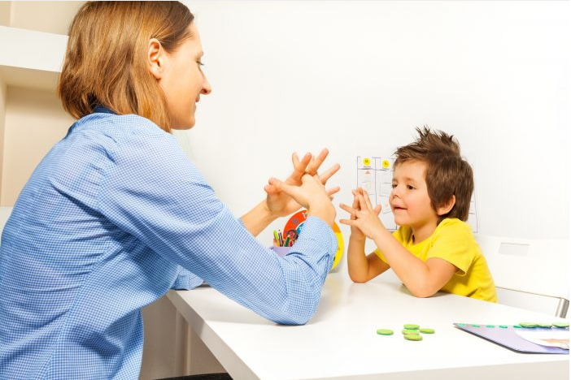

10 DATOS CURIOSOS DE LOS NIÑOS AUTISTAS.
¿Sabías que los niños con autismo suelen tener la cabeza más grande que el resto,
así como una mayor capacidad para captar información? Muchas personas no conocen estos datos,
de hecho, si no tienes experiencia con niños que sufren autismo, es probable que no sepas mucho
sobre este trastorno.
1. Tienen una mayor capacidad de procesamiento cognitivo
Un estudio publicado en la Journal of Abnormal Psychology desveló que los niños
con autismo tienen una mayor capacidad para captar y procesar información ‘especial’. De hecho,
si alguna vez te has fijado, sabrás que estos pequeños suelen ser observadores excelentes y a
menudo captan detalles que el resto de las personas pasa por alto. Por eso, suelen ser muy buenos
en áreas como las matemáticas, la tecnología y las artes visuales.
2. No les interesa la opinión que los demás tengan sobre ellos
Una investigación realizada en el Instituto Tecnológico de California encontró un detalle interesante sobre los niños que padecen autismo: no suelen prestarle atención a lo que los demás piensan sobre ellos. Para arribar a estos resultados los investigadores compararon el comportamiento de personas con y sin autismo al hacer una donación en dos contextos diferentes: estando solos y siendo observados por alguien. Los resultados mostraron que quienes no tenían autismo donaron más dinero en presencia de otra persona ya que les importaba causar una buena impresión, mientras que quienes padecían este trastorno donaron la misma cifra en ambas condiciones.
3. Les desagradan algunas texturas
La mayoría de los niños con autismo suelen ser hipersensibles a algunas texturas, sobre todo cuando se trata de la comida. Ello explica por qué son tan especiales a la hora de comer algunos alimentos e incluso pueden negarse a tocarlos. También hay quienes manifiestan esa hipersensibilidad en otros ámbitos y se resisten a llevar determinadas prendas porque le resultan desagradables al tacto o evitan interactuar con algunos objetos porque no les gusta su textura.
4. Su rostro los distingue
A pesar de que el autismo es un trastorno neurológico, también tiene un componente genético, que es el responsable de que la mayoría de estos niños compartan determinados rasgos comunes, sobre todo en el rostro. Los pequeños con este trastorno se identifican rápidamente porque suelen tener los ojos y la boca anchos, la nariz y las mejillas pequeñas y la zona alta de la cara más grande de lo habitual, aunque no todos desarrollan estas características.
5. Es un trastorno que comparten muchos genios
Según expertos del Trinity Collage de Dublín, grandes genios de la historia como Isaac Newton, Mozart, Immanuel Kant y Albert Einstein tenían rasgos que hacen sospechar la presencia de un trastorno del espectro autista. Otras personalidades actuales que también tienen estos rasgos son: Woody Allen, Michael Jackson, Bill Gates y Stanley Kubrick.
6. La mayoría de los niños con autismo fueron prematuros
Una investigación publicada en la revista Pediatrics recopiló durante 21 años datos de recién nacidos y encontró que los bebés prematuros y los que nacen con bajo peso tienen cinco veces más probabilidades de desarrollar autismo en comparación con los bebés que tienen un peso normal al nacer. Esto explica por qué muchos de los niños con autismo nacieron de forma prematura.
7. Los niños con autismo no son todos iguales
Aunque el autismo es un trastorno que tiene características muy bien definidas, no siempre se expresa de la misma forma. Ello explica por qué cada niño es único y tiene peculiaridades que lo distinguen del resto. Por una parte, esto se debe a que existen tres grados distintos de autismo: leve, moderado y severo, lo cual determina el nivel de intensidad de los síntomas. No obstante, el hecho de que cada pequeño sea diferente también depende de las áreas más afectadas por el trastorno, algunos suelen presentar mayores problemas en las relaciones interpersonales, otros en la comunicación y otros en su desarrollo motor.
8. Los niños con autismo tienen la cabeza más grande que el resto
Un estudio realizado en la Universidad de Cincinnati, en Estados Unidos, encontró la causa de por qué los niños con autismo tienen la circunferencia de la cabeza más grande que sus coetáneos. Los investigadores consideran que se debe a que estos pequeños tienen mayores niveles de la hormona del crecimiento, específicamente del factor de crecimiento insulínico tipo 1 y 2, lo cual estimula un mayor desarrollo de la cabeza.
9. Son hipersensibles a los sonidos
Los niños con autismo tienen muy baja tolerancia a los sonidos muy intensos, algunos incluso no pueden soportar ruidos que para el resto de las personas son normales. El simple hecho de teclear en el ordenador o poner música puedes generarles una gran molestia, sobre todo cuando se trata de ruidos persistentes. Lo que sucede es que tienen una mayor sensibilidad auditiva, lo que hace que perciban los sonidos con mayor intensidad que el resto de las personas.
10. Tienen alterado el desarrollo de sus neuronas espejo
Las neuronas espejo son las células cerebrales de la empatía, las cuales permiten que los niños sean capaces de ponerse en el lugar de los demás, comprender a quienes les rodean y anticiparse a sus deseos y acciones. Sin embargo, un estudio publicado en la revista Biological Psychiatry ha desvelado que los niños con autismo tienen alterado el sistema de las neuronas espejo, lo que explicaría por qué tienen tan poco desarrolladas sus habilidades sociales y les resulta tan difícil mostrarse empáticos con los demás.
Siguenos en nuestras redes: